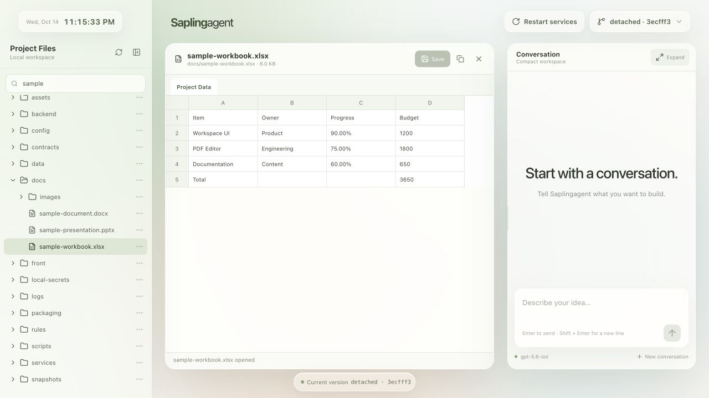
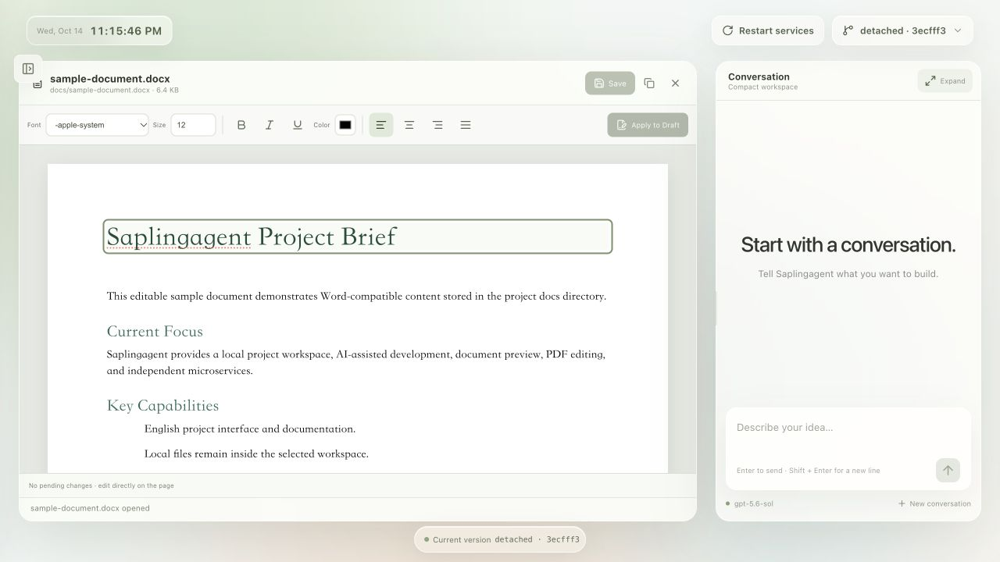
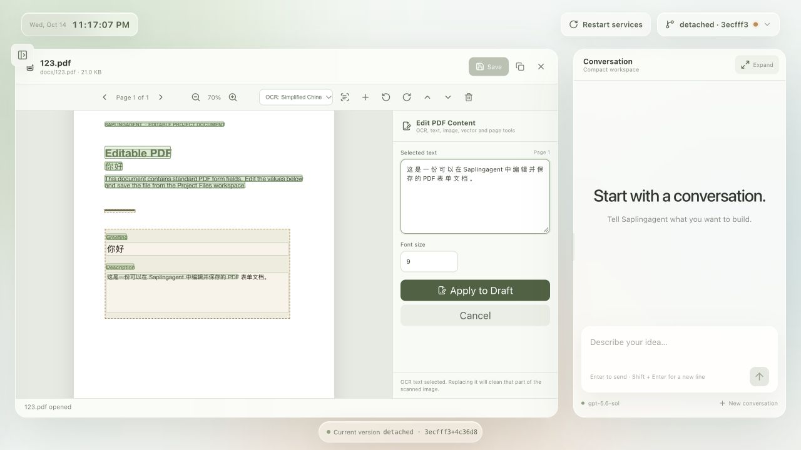

Saplingagent · Kernel 0.9.5
The script installs the local management kernel and opens project/AI setup in a temporary configuration service. Save your project name, folder, icon and AI settings, build the small native launcher, then finish setup and open your generated app. No Git initialization or storage prompt. Existing customer Git, application files and data are preserved. Project launcher guide · Kernel upgrade and recovery.
From a conversation to your own application.
A local workspace for building and evolving software with AI. Start with one chat, shape the interface and extend the tools in your own project.
▶ English demo · 1:41 · ▶ 中文演示 · 1:41
Watch the demo
English narration and captions · 1:41
中文演示 · 大字号字幕 · 1:41
Case study · A WPS-style local document workspace
From one chat page to a document workspace. Browse files, make basic Office edits, work with PDFs and keep AI conversation alongside your documents.
This is an example application built with Saplingagent. The default installation starts with the minimal chat interface.

| Module | What the example does |
|---|---|
| File browsing and management | Browse a folder tree, filter file names, refresh listings, create files and folders, and copy absolute paths. |
| Word documents | Preview DOCX, edit paragraph text directly, and adjust paragraph-wide font, size, emphasis, color and alignment. |
| Spreadsheets | Open Excel, CSV and ODS files, switch worksheets, and edit cell values or formula text. |
| PowerPoint | View PPTX slides and edit their text through a structured panel. |
| PDF reading and editing | Navigate and zoom, add or replace text, fill text form fields, rotate or reorder pages, and delete pages. |
| Local OCR | Recognize English or Simplified Chinese on a page, then select the recognized text for editing. |
| PDF graphics | Replace, crop and adjust image objects; change vector geometry, color and paths. |
| Markdown and code | Switch between Markdown editing and preview, and edit common code, configuration and text files. |
| Images and media | Preview images and play audio or video files. |
| Save and restore | Check for external file changes before saving, flag unsaved work, and restore the version before the last save. |
Word editing — work directly on rendered paragraphs with a formatting toolbar.

PDF and OCR — local Simplified Chinese OCR with a recognized line selected in the text editor.

Editing scope
Office editing covers basic changes. Word controls format whole paragraphs; PowerPoint edits text rather than objects or animations. The spreadsheet view shows the first 250 rows and 60 columns; formula text can be edited, but no formula calculation engine is provided. PDF replacement can change typography or affect overlapping objects. The file panel currently covers browsing and creation; rename, move and recycle-bin workflows are not implemented.
Folder ownership
The complete application folder contains all project-owned code, rules, Skills and launcher helpers; it does not depend on another developer checkout. Model services and locally installed dependencies remain declared requirements.
Full Access remains available. Normal edits are recommended within this folder; a customer can explicitly request work on external code. Every final conversation reply is instructed to include a completion-review receipt reporting actual work and checks, including read-only replies.
Install and build your launcher
- Download the release snapshot into a new writable folder, or use the one-command installer in the README.
- Run
bash Saplingagent.shin macOS Terminal or Windows Git Bash. It prepares the local kernel, opens the external configuration service and exits. - Save your project name, desired folder name and optional icon, then save and select your AI scheme. Saving settings does not move the folder.
- Click Save & build app. Configuration stops owned project processes, waits for them to exit, applies the folder name and builds the small .app or .exe. The page keeps the same URL; an existing destination is never replaced.
- After the build succeeds, click Finish setup. The configuration service exits and its temporary files are cleaned. Double-click the generated app to check/install missing or changed local dependencies and start your project.
Keep the complete application folder. Reopen configuration to change its name, icon or AI settings. Failed builds keep saved settings and the actual folder for retry; an unchanged native launcher is reused and a failed replacement preserves the previous output. macOS guide · 中文安装说明 · Windows guide · Launcher details and current limits.
Windows installation
A native Windows10/11 x64 and ARM64 Bash menu installs this complete folder and configures Codex/OpenCode. Windows10 x64 is the requested target; real Windows login/model/restart acceptance remains pending. See Windows guide / 中文 Windows 安装说明.
What is implemented
Streaming chat with GFM Markdown tables, local session recovery, stop/retry/new conversation, progress-based inactivity reminders, independent kernel upgrades/restart controls, 16 MCP tools and 3 project Skills. The default whole-turn deadline is disabled. Full Access follows the current OS user's permissions.
App Server runs as a local Codex subprocess, not a hosted Saplingagent model service. Frontend code belongs in front/, backend services in backend/, and human guides in docs/. Private data and credentials stay in the application folder and are excluded from source delivery.
License and current limits
Project-owned source uses PolyForm Noncommercial 1.0.0. Commercial use requires separate written permission. The current local Codex login is not a commercial or hosted authentication integration.
Long-term automatic layout adaptation remains a goal requiring real usage evidence. Cloud synchronization, Linux installers and a signed native Mac app are not implemented.
More information
Current interface · Version management · Historical product plan
The repository English README and 简体中文 README provide the complete quick start. AI execution starts with AGENTS.md and rules/README.md, not these human guides.
Public release guide · 2026-10-19 · Rules 2026-10-15.1
Configure AI
After the management kernel is prepared, the script opens the temporary local project and account/custom-provider setup page. Save the selected scheme, use Save & build app, then choose Finish setup before opening the generated app. Credentials stay in the project. See the AI configuration guide.
Claude Agent
The official Claude Agent SDK is also available as a local engine. Install/update, then choose Configure AI and the Anthropic preset. Use your own API key or compatible gateway; claude.ai subscription login is not offered. Project MCP, Skills and resumable streaming conversations use the existing single-chat page. Claude and custom API setup.
Restart all project services
Restart app reloads frontend,backends and newly created services in-page. The AI adding an independent process also registers its startup,dependencies and readiness. Project service startup.
Independent kernel management
Update shared platform functions separately from your application Git history. Preview conflicts, keep an owned-source backup, and recover explicitly if compatibility breaks. Kernel update and recovery.
Files and current page inspection
Attach local files and images in chat by picker, drop or clipboard image. The connected open project page supports fresh DOM/layout and optional image inspection through page_read. Personal conversations, attachments and credentials stay in ignored local storage. Usage and limits.
Current kernel version:0.9.5
Saplingagent uses one kernel version from kernel/manifest.json. The current setup, footer and installer show Kernel0.9.5. There is no separate product version. For old0.90/0.91/0.92 updater numbers see one-time migration; preserve local conflicts and backups.
Project-relative configuration storage
Temporary configuration runs in a session-owned ../sapling-config-… directory beside this project. The terminal prints its location; Finish setup waits for exit before cleanup. Persistent settings, caches and outputs remain local. Directory layout and process locks.
Project status
The compiled app opens a small status page with actual project ports and lifecycle controls. Startup, restart and stop behavior.